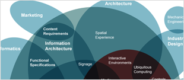
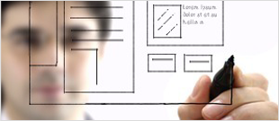

We build dream products.
We're different. We'll prove it. We provide all
the web interfaces and functionality you need with the beauty and zing you
love.
We're a close knit team of
talented back end development professionals and front-end, UX/UI designers who have built really
great solutions. Whether it's successfully crafting critical Inventory Control management software,
developing large and complex e-commerce and mobile code for large, financial institutions,
partnering with a 300MM+ start-up to launch the Next Big Idea or something in
between; Track-n-test will “make the difference” you need!
|
Planning.
To create the perfect application for your business it’s critical we learn what is important to you
and your customers. As we gather this information, we will outline your overall goals and make a
plan for success. The more our team can learn about your business, your customers, and the problems
you are looking to solve, the better we can provide innovative ways for your application to make
the lives of others easier.
|

|
Stories & Features.
When working on web applications we often try to think in terms of the type of
people who will be using the system and the activities they will need to perform. We often create
personas for your different application users and write feature stories for each of your users,
outlining what types of problems we need to solve for each of them. By thinking in terms of stories
and writing more in terms of the problems we are trying to solve, we can more thoroughly identify
the features you need. Once we are done with the story process, we start to break the stories down
into features and prioritize them with you.
|

|
Wireframes & Creative.
We typically don’t jump directly into making beautiful application designs. The
first part of the process is to create basic sketches of each of the screens of your application,
outlining what will be where and why. After going through rounds of reviewing the wireframes and
tweaking the type of information that needs to be collected, saved, displayed or reported, we can
start with the actual creative designs. This includes the aesthetic look and feel of how the
application will appear as well as behave.
|
|
Application Development.
After we have outlined a plan, identified the
necessary features, and have the aesthetic designs created for each of the pages within the
application, we will start developing the your product. Our developers typically do a mixture of
individual and pair programming on our applications. Pair programming gives the benefit of having
an additional set of eyes on the code and another brain to bounce ideas off of when making critical
decisions during the building process. On new projects, our team typically works
with PHP or ASP .NET.
During the development process we will
frequently send you links to where you can review and provide feedback on the application we are
creating.
|
|
Ongoing Maintenance.
Our projects are typically low maintenance but it’s rare to have a development
project that is no maintenance.
The amount you will learn after having your
first version of an application released to your clients is tremendous. People will give you a lot
of feedback and a lot of suggestions about how they think things should work or features they would
want in the system. During this time we will work with you to determine how features should be
adjusted, what features should be added, and how to continue to grow your web project in the
future. As your project becomes a success, you will want to invest in bigger and better features
and we will be here to help you as needed.
|